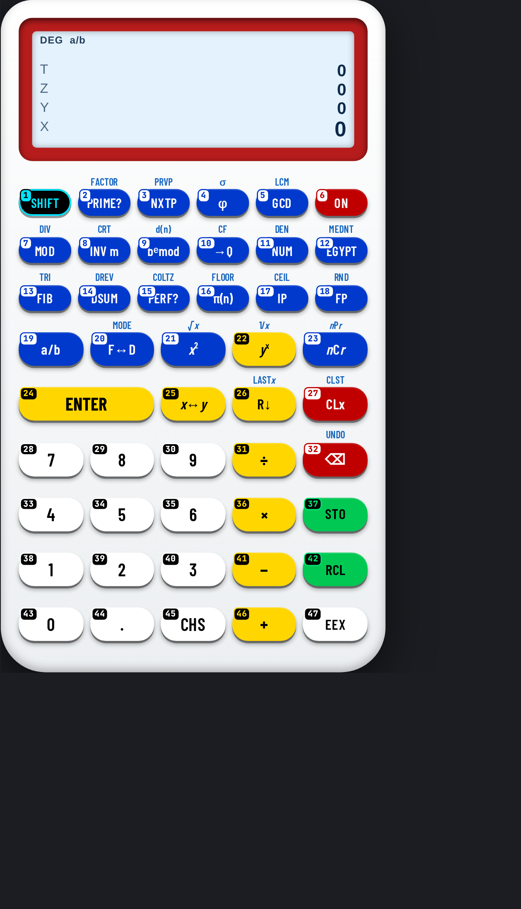

This manual belongs to the U-45 CALCULATORS app and describes calculator #19 — Exact-Fraction RPN Scientific (walnut) exactly as it behaves in the app. Every worked example and every drill answer in this book was run on the app's own keys by an automated checker before printing; only results that matched were kept.
Keys are written as a chip showing the key number and its face, for example #1 SHIFT. Numbers follow the numbering printed on the keys (switch it on with “# On”). A shifted function is written as two chips: the shift key, then the key that carries the function.
four-level RPN with an exact rational (fraction) stack: key a number, ENTER, key the next, then the operation.
Open U-45 CALCULATORS, choose #19 from the home screen (or the jump list at the top), and the calculator appears with its numbered, colour-coded keys. Click or tap keys, or type on a keyboard.
Every key carries a small number in the same reading order as this manual (left→right, top→bottom; the navigation pad counts ▲ ▼ ◀ ▶ then its centre). Use “# On / # Off” in the bar above the calculator to show or hide them — the setting is remembered.
Keys are coloured by job: white = digits, yellow = operators/execute, blue = functions, green = memory/variables, red = clear/delete/power, black with cyan = shift/modes/menus/navigation. Press “Classic” to return to the original model colours and “Hi-Contrast” to come back.
Display text uses the U45 Display face, key legends use U45 Keys (a condensed face that stays readable on small keys) and key numbers / helper text use U45 Mono. All three are bundled inside the app, so they work offline.
The Copy button copies exactly what the display shows (indicators that are switched off are skipped) so you can paste a result into a message or spreadsheet.
Fit scales the calculator to your screen; 1:1 shows it at its design size. On a phone, Fit is the comfortable choice.
Reset rebuilds this calculator from scratch: display, memory, stack and modes return to their start-up state. Use it before each worked example in this manual.
On a computer you can type: digits, + − * / ^ ( ), Enter or = to execute, Backspace to delete, Esc to clear, arrows to move. Letters reach common functions (see the Keyboard shortcuts chapter).
Hover over (or long-press) a key to see “#number name”.
A cyan icon rail on the right of every calculator opens 15 panels: Currency (166 currencies, rates auto-updated from open.er-api.com or Frankfurter when online and cached with a date; the bundled dated snapshot is used offline), Units (exact SI factors), Health (published formulas, not medical advice), Simple, Complex, Loans, Construction, Mechanical and Engineering (30+ numbered tools each), Calendar generator, Customize (26 options, saved per calculator), Settings (31 options), History, Hide and View. On narrow phones the rail shows icons only.
Every calculation is logged per calculator with a date and time. Open History on the rail to search, re-use (types the input back into the calculator), copy, delete one, select several and delete, or delete all (asks for confirmation). History is stored encrypted on this device (AES-GCM); exporting it needs the passcode.
The green CS button between Restore and Social reads a problem from the camera, a photo, a PDF or a text file. Recognition (Tesseract OCR, English) runs offline on the device; an online language download is only used if you switch it on in Settings. Check and edit the recognised text, then Solve shows the steps offline. OCR is not available when the app is opened as a plain file:// page in a browser.
The layout selector between Fit and # offers Auto plus 12 layouts: 3D classic, 3D high-contrast, Classic, Pocket, Compact, Expanded, Desktop wide, Split, One-hand left, One-hand right, Large print and Minimal. Auto picks one for your screen and your choice is remembered per calculator. The View panel hides the top bars, the tool bar, the rail or everything (full screen); the round yellow ⤢ button at bottom-left (or Esc) always restores the normal view.
The Hide panel lists every button, rail icon and section of this calculator as tick boxes. Hiding is instant; unhiding asks for the app passcode.
Right-click, drag and long-press saving of images is blocked inside the app. Saving or sharing an image export (PNG, JPG, QR, calendar), printing a calendar, and downloading or sharing the app itself ask for the passcode, and exported images carry a U-45 watermark. Honest note: this cannot stop a screenshot or screen recording made by the operating system or another device.
U-45 CALCULATORS is an offline app: after the first load everything — including fonts — comes from the device.
| Colour | Group | Keys on this model |
|---|---|---|
| num | Digits & number entry | #28, #29, #30, #33, #34, #35, #38, #39, #40, #43, #44, #45, #47 |
| op | Operators & execute | #22, #24, #25, #26, #31, #36, #41, #46 |
| fn | Functions | #2, #3, #4, #5, #7, #8, #9, #10, #11, #12, #13, #14, #15, #16, #17, #18, #19, #20, #21, #23 |
| mem | Memory, variables & registers | #37, #42 |
| clr | Clear, delete & power | #6, #27, #32 |
| mod | Shift, modes, menus & navigation | #1 |
45 features: 31 live on the keys, 9 app/UI features, 5 planned (documented but not yet working — they are clearly marked and never used in examples).
Calculator #19 is a four-level RPN with an exact rational (fraction) stack: key a number, ENTER, key the next, then the operation. Each card below is one of its 31 working features, with the keys that reach it and, where one exists, a verified example.
Calculator #19 with key numbers shown (Hi-Contrast colours).
“Shift” = 2nd / f / SHIFT layer; “Alpha” = ALPHA layer; “3rd” = 3rd / g layer. A dot means the layer is empty on that key.
| # | Face | Shift | Alpha | 3rd | Group |
|---|---|---|---|---|---|
| 1 | SHIFT | · | · | · | mod |
| 2 | PRIME? | FACTOR | · | · | fn |
| 3 | NXTP | PRVP | · | · | fn |
| 4 | φ | σ | · | · | fn |
| 5 | GCD | LCM | · | · | fn |
| 6 | ON | · | · | · | clr |
| 7 | MOD | DIV | · | · | fn |
| 8 | INV m | CRT | · | · | fn |
| 9 | bᵉmod | d(n) | · | · | fn |
| 10 | →Q | CF | · | · | fn |
| 11 | NUM | DEN | · | · | fn |
| 12 | EGYPT | MEDNT | · | · | fn |
| 13 | FIB | TRI | · | · | fn |
| 14 | DSUM | DREV | · | · | fn |
| 15 | PERF? | COLTZ | · | · | fn |
| 16 | π(n) | FLOOR | · | · | fn |
| 17 | IP | CEIL | · | · | fn |
| 18 | FP | RND | · | · | fn |
| 19 | a/b | · | · | · | fn |
| 20 | F↔D | MODE | · | · | fn |
| 21 | x² | √x | · | · | fn |
| 22 | yx | 1/x | · | · | op |
| 23 | nCr | nPr | · | · | fn |
| 24 | ENTER | · | · | · | op |
| 25 | x↔y | · | · | · | op |
| 26 | R↓ | LASTx | · | · | op |
| 27 | CLx | CLST | · | · | clr |
| 28 | 7 | · | · | · | num |
| 29 | 8 | · | · | · | num |
| 30 | 9 | · | · | · | num |
| 31 | ÷ | · | · | · | op |
| 32 | ⌫ | UNDO | · | · | clr |
| 33 | 4 | · | · | · | num |
| 34 | 5 | · | · | · | num |
| 35 | 6 | · | · | · | num |
| 36 | × | · | · | · | op |
| 37 | STO | · | · | · | mem |
| 38 | 1 | · | · | · | num |
| 39 | 2 | · | · | · | num |
| 40 | 3 | · | · | · | num |
| 41 | − | · | · | · | op |
| 42 | RCL | · | · | · | mem |
| 43 | 0 | · | · | · | num |
| 44 | . | · | · | · | num |
| 45 | CHS | · | · | · | num |
| 46 | + | · | · | · | op |
| 47 | EEX | · | · | · | num |
Every key on calculator #19, in number order, with every function it carries in this app.
8 examples, each run on this calculator's keys by the U-45 checker. Follow the chips in order.
Calculate 3/4 ENTER 1/6 +. Press Reset first.
#40 3 → #19 a/b → #33 4 → #24 ENTER → #38 1 → #19 a/b → #35 6 → #46 +
Display shows X11/12 — expected 0.91666667. ✔ verified on the app.
Calculate 12 ENTER 18 GCD. Press Reset first.
#38 1 → #39 2 → #24 ENTER → #38 1 → #29 8 → #5 GCD
Display shows X6 — expected 6. ✔ verified on the app.
Calculate 4 ENTER 6 LCM. Press Reset first.
#33 4 → #24 ENTER → #35 6 → #1 SHIFT → #5 LCM
Display shows X12 — expected 12. ✔ verified on the app.
Calculate φ(10). Press Reset first.
#38 1 → #43 0 → #4 φ
Display shows X4 — expected 4. ✔ verified on the app.
Calculate NEXTP after 14. Press Reset first.
#38 1 → #33 4 → #3 NXTP
Display shows X17 — expected 17. ✔ verified on the app.
Calculate 3 ENTER 4 ENTER 5 bᵉmod. Press Reset first.
#40 3 → #24 ENTER → #33 4 → #24 ENTER → #34 5 → #9 bᵉmod
Display shows X1 — expected 1. ✔ verified on the app.
Calculate 3 ENTER 7 INV mod. Press Reset first.
#40 3 → #24 ENTER → #28 7 → #8 INV m
Display shows X5 — expected 5. ✔ verified on the app.
Calculate 0.75 NUM. Press Reset first.
#43 0 → #44 . → #28 7 → #34 5 → #11 NUM
Display shows X3 — expected 3. ✔ verified on the app.
RPN works number, number, operator: 3 ENTER 4 + = 7. Results stay on the stack for the next step.
After an operation, just type the next number and operator: 3 ENTER 4 + 5 × gives (3+4)×5 = 35.
If you entered numbers in the wrong order for − ÷ or yˣ, press x≷y before the operator.
LASTx brings back the X value of the previous operation — useful for a × a.
Up to four values are kept; R↓ rolls through them.
On 4-level stacks the T register copies down, so a constant multiplier can be reused by pressing × repeatedly.
23 extra functions sit on shifted layers. Press the layer key once, then the key: for example #1 then #2 → FACTOR; #1 then #3 → PRVP; #1 then #4 → σ; #1 then #5 → LCM.
Use Appendix B (function finder): look up the function, read its key number, then find that number on the keypad. Numbers run left→right, top→bottom from #1 to #47.
20 keys on this model have a keyboard shortcut (see chapter 7). Typing digits and operators is much faster than clicking.
Estimate first (round each number) and compare with the display. If the answer is 10× or 100× off, a decimal point or percent key was missed.
Press Copy in the bar above the calculator to put the display text on the clipboard instead of retyping it.
Hi-Contrast colours use black/white/yellow/blue/green/red with black or white text for maximum contrast; key numbers stay on in both colour schemes.
With the calculator open on a computer, these physical keys press the numbered keys below (Ctrl/Alt/⌘ combinations are left to the browser). Shifted functions are reached by clicking the shift key first.
| Keyboard | # | Key | Does |
|---|---|---|---|
| q | #21 | x² | Square x² |
| ^ | #22 | yx | yˣ — raise Y to the power X (RPN: base first, then exponent) |
| Enter | #24 | ENTER | ENTER — terminates digit entry and pushes X up the stack (RPN) / confirms a value |
| 7 | #28 | 7 | Digit 7 |
| 8 | #29 | 8 | Digit 8 |
| 9 | #30 | 9 | Digit 9 |
| / | #31 | ÷ | Division ÷ |
| Backspace Delete | #32 | ⌫ | Backspace — delete the last digit typed |
| 4 | #33 | 4 | Digit 4 |
| 5 | #34 | 5 | Digit 5 |
| 6 | #35 | 6 | Digit 6 |
| * x | #36 | × | Multiplication × |
| 1 | #38 | 1 | Digit 1 |
| 2 | #39 | 2 | Digit 2 |
| 3 | #40 | 3 | Digit 3 |
| - | #41 | − | Subtraction − |
| 0 | #43 | 0 | Digit 0 |
| . , | #44 | . | Decimal point. Pressing it first gives “0.”; a second point in the same number is ignored |
| + | #46 | + | Addition + |
| e | #47 | EEX | EEX — enter a power-of-ten exponent for the number in X |
| “# On / # Off” | show / hide key numbers |
| “Classic / Hi-Contrast” | switch key colours |
| “Copy” | copy display text |
| “Fit / 1:1” | scale to screen / design size |
| “Reset” | restart this calculator |
| Jump list | switch to another of the 45 calculators |
ENTER after + duplicates the result. Usually you want to type the next number directly.
Y − X and Y ÷ X: enter the first operand first. 10 ENTER 4 − = 6.
Make a number negative with CHS/+/−, not with −.
If f / g / SHIFT is shown, the next key is shifted. Clear it with the prefix-clear function.
Old values (memory, stack, open brackets, worksheet values) can leak into the next calculation. Press Reset or clear before starting a new problem.
A shift / 2nd indicator that is still lit will turn the next key into its shifted function. Look at the display indicators before pressing.
Work each one on calculator #19, then check your keys and the answer in Appendix A. Every answer was produced by this calculator.
Without looking at the table, find each key on the picture. Answers in Appendix A.
| Function | Label | Keys |
|---|---|---|
| Addition + | + | #46 |
| Backspace — delete the last digit typed | ⌫ | #32 |
| Best fraction approximation | →Q | #10 |
| ceil | CEIL | #1 → #17 |
| Change sign (+/−) of the number being typed or the current result | CHS | #45 |
| Chinese remainder (T mod Z, Y mod X) | CRT | #1 → #8 |
| Clear stack | CLST | #1 → #27 |
| CLx — clear X | CLx | #27 |
| Collatz steps | COLTZ | #1 → #15 |
| Combinations nCr | nCr | #23 |
| Continued fraction | CF | #1 → #10 |
| Count primes ≤ n | π(n) | #16 |
| Decimal point. Pressing it first gives “0.”; a second point in the same number is ignored | . | #44 |
| Denominator | DEN | #1 → #11 |
| Digit 0 | 0 | #43 |
| Digit 1 | 1 | #38 |
| Digit 2 | 2 | #39 |
| Digit 3 | 3 | #40 |
| Digit 4 | 4 | #33 |
| Digit 5 | 5 | #34 |
| Digit 6 | 6 | #35 |
| Digit 7 | 7 | #28 |
| Digit 8 | 8 | #29 |
| Digit 9 | 9 | #30 |
| Digit sum | DSUM | #14 |
| Division ÷ | ÷ | #31 |
| Divisor count | d(n) | #1 → #9 |
| Divisor sum | σ | #1 → #4 |
| EEX — enter a power-of-ten exponent for the number in X | EEX | #47 |
| Egyptian fraction | EGYPT | #12 |
| ENTER — terminates digit entry and pushes X up the stack (RPN) / confirms a value | ENTER | #24 |
| Euler totient | φ | #4 |
| Fibonacci number | FIB | #13 |
| floor | FLOOR | #1 → #16 |
| fp | FP | #18 |
| Fraction / mixed / decimal display | F↔D | #20 |
| Fraction bar during entry | a/b | #19 |
| GCD of Y and X | GCD | #5 |
| Integer quotient | DIV | #1 → #7 |
| ip | IP | #17 |
| LASTx — recall the X value used by the last operation | LASTx | #1 → #26 |
| LCM of Y and X | LCM | #1 → #5 |
| Mediant | MEDNT | #1 → #12 |
| Multiplication × | × | #36 |
| Next prime | NXTP | #3 |
| Numerator | NUM | #11 |
| ON — power on | ON | #6 |
| Perfect / abundant / deficient | PERF? | #15 |
| Permutations nPr | nPr | #1 → #23 |
| Previous prime | PRVP | #1 → #3 |
| Primality test of X | PRIME? | #2 |
| Prime factorization | FACTOR | #1 → #2 |
| R↓ — roll the stack down | R↓ | #26 |
| RCL — recall a memory / variable | RCL | #42 |
| Reciprocal x⁻¹ (1/x) | 1/x | #1 → #22 |
| Reverse digits | DREV | #1 → #14 |
| Round to the displayed precision | RND | #1 → #18 |
| SETUP — angle unit, number format, display options | MODE | #1 → #20 |
| SHIFT / 2nd — the next key uses its upper (shift-coloured) function | SHIFT | #1 |
| Square root √ | √x | #1 → #21 |
| Square x² | x² | #21 |
| STO — store the value into a memory / variable (press the target next) | STO | #37 |
| Subtraction − | − | #41 |
| Triangular number | TRI | #1 → #13 |
| undo | UNDO | #1 → #32 |
| x≷y — exchange X and Y | x↔y | #25 |
| Y mod X | MOD | #7 |
| Y⁻¹ mod X | INV m | #8 |
| yˣ — raise Y to the power X (RPN: base first, then exponent) | yx | #22 |
| Z^Y mod X | bᵉmod | #9 |
Rational & number-theory RPN: the four-level stack holds exact fractions (math.js Fraction objects). Number-theory routines are original U-45 code; modular power uses BigInt.
Results that cannot be exact (e.g. √2) are shown as decimals.
U-45 CALCULATORS models are independent software recreations; they are not affiliated with any calculator manufacturer and carry no third-party trademarks.
| #1 SHIFT | #2 PRIME? ⇧ FACTOR | #3 NXTP ⇧ PRVP |
| #4 φ ⇧ σ | #5 GCD ⇧ LCM | #6 ON |
| #7 MOD ⇧ DIV | #8 INV m ⇧ CRT | #9 bᵉmod ⇧ d(n) |
| #10 →Q ⇧ CF | #11 NUM ⇧ DEN | #12 EGYPT ⇧ MEDNT |
| #13 FIB ⇧ TRI | #14 DSUM ⇧ DREV | #15 PERF? ⇧ COLTZ |
| #16 π(n) ⇧ FLOOR | #17 IP ⇧ CEIL | #18 FP ⇧ RND |
| #19 a/b | #20 F↔D ⇧ MODE | #21 x² ⇧ √x |
| #22 yx ⇧ 1/x | #23 nCr ⇧ nPr | #24 ENTER |
| #25 x↔y | #26 R↓ ⇧ LASTx | #27 CLx ⇧ CLST |
| #28 7 | #29 8 | #30 9 |
| #31 ÷ | #32 ⌫ ⇧ UNDO | #33 4 |
| #34 5 | #35 6 | #36 × |
| #37 STO | #38 1 | #39 2 |
| #40 3 | #41 − | #42 RCL |
| #43 0 | #44 . | #45 CHS |
| #46 + | #47 EEX |
U-45 CALCULATORS · Calculator #19 · cut out and keep